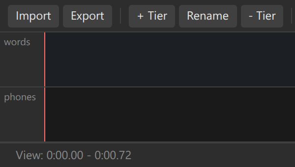
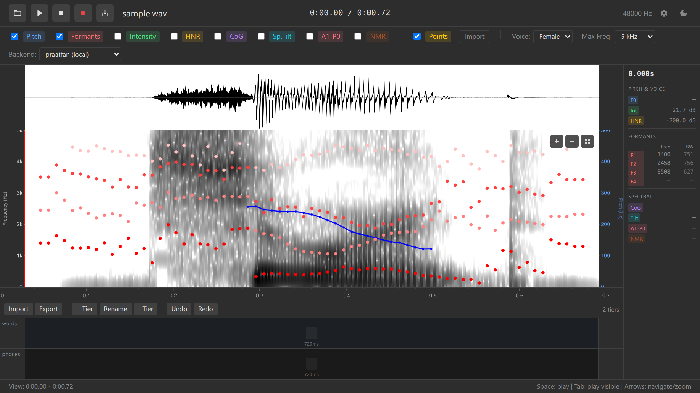
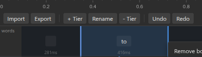

4. Annotations
Create multi-tier transcriptions with TextGrid support
Overview
Annotations let you add time-aligned transcriptions to your audio. In this section, you’ll learn:
- Creating annotation tiers
- Adding and removing boundaries
- Editing interval labels
- Using keyboard shortcuts for efficient annotation
- Understanding tier types (interval and point)
What Are Annotation Tiers?
Annotation tiers divide your audio into labeled intervals, similar to Praat’s TextGrid format.
Common uses:
- Phonetic transcription: Mark phones/phonemes
- Word alignment: Segment words with timestamps
- Prosody: Label pitch accents and breaks
- Events: Mark breathing, laughter, noise

Creating Your First Tier
Click the “+ Add Tier” button (usually below the spectrogram)

Add tier button Enter a tier name in the dialog:
- Examples: “phones”, “words”, “syllables”
- Names should be descriptive and lowercase
Select tier type:
- Interval tier (most common) — Divides time into labeled segments
- Point tier — Marks specific time points (less common)
Click “Create”
A new tier appears below the spectrogram
Create multiple tiers for different levels of analysis (e.g., “words” tier above “phones” tier).
Adding Boundaries
Boundaries divide a tier into intervals. Each interval can have a text label.
Double-click on a tier at the time position where you want a boundary

Adding a boundary A vertical boundary line appears
This creates two intervals: before and after the boundary
Repeat to add more boundaries
Keyboard shortcut:
- Double-click on tier — Add boundary at that time position
Try this: Zoom in on a word and add boundaries at the start and end of each phone. You’ll create a series of intervals corresponding to individual sounds.
Editing Interval Labels
Each interval can have a text label (e.g., a phone symbol, word, or comment).
Double-click on an interval (the space between two boundaries)
A text input field appears

Editing an interval label Type the label (e.g., “a”, “s”, “hello”, “breath”)
Press Enter to save
Press Escape to cancel without saving
Keyboard shortcuts:
- Double-click interval — Edit label
- Enter — Save label
- Escape — Cancel editing
- Tab — Move to next interval (if implemented)
Use IPA symbols for phonetic transcription. Most browsers support Unicode IPA input. Install an IPA keyboard or use copy-paste from a character palette.
Moving Boundaries
You can adjust boundary positions by dragging:
Click on a boundary line
Drag left or right to adjust its position
Release to finalize the position
When you move a boundary, both adjacent intervals resize accordingly. The boundary to the left and right of the moved boundary stay fixed.
Removing Boundaries
Right-click on a boundary line
Select “Remove boundary” from the context menu

Boundary context menu The boundary is deleted, merging the two adjacent intervals
The merged interval’s label becomes the label of the left interval
Keyboard shortcut (if implemented):
- Select boundary + Delete key — Remove selected boundary
Removing a boundary merges intervals permanently (unless you undo). Use Ctrl+Z to undo if needed.
Undo and Redo
ozen-web has unified undo/redo for all annotation actions:
Keyboard shortcuts:
- Ctrl+Z (Windows/Linux) or Cmd+Z (Mac) — Undo last action
- Ctrl+Y or Ctrl+Shift+Z — Redo
Undoable actions:
- Adding boundaries
- Removing boundaries
- Moving boundaries
- Editing interval labels
- Adding/removing data points (section 5)
Non-undoable actions (by design):
- Adding/removing tiers
- Loading audio files
- Loading TextGrid files
Get comfortable with Ctrl+Z! It allows you to experiment freely without worrying about mistakes.
Working with Multiple Tiers
Create hierarchical annotations with multiple tiers:
Add a “words” tier (click “+ Add Tier”)
Add a “phones” tier
In the words tier, add boundaries at word boundaries
In the phones tier, add boundaries at phone boundaries (within each word)
Label each interval appropriately
Tier Ordering
Tiers are displayed bottom-to-top in the order they were created. Some implementations allow reordering (check your version).
Convention: Place higher-level tiers (words, phrases) above lower-level tiers (phones).
Boundary Snapping
ozen-web supports boundary snapping to help align tiers:
When adding a boundary on a lower tier, move your cursor close to an existing boundary on an upper tier
The cursor “snaps” to align with the upper tier’s boundary
Double-click to place the boundary at the snapped position
This feature helps maintain consistent alignment across tiers (e.g., ensuring word boundaries align across “words” and “phones” tiers).
Selecting Annotation Tiers
Some operations require selecting which tier to work on:
Keyboard shortcuts:
- 1 — Select tier 1
- 2 — Select tier 2
- 3 — Select tier 3
- 4 — Select tier 4
- 5 — Select tier 5
The selected tier is highlighted or indicated visually.
Example Workflow
Let’s annotate a short phrase: “hello world”
Load audio (section 1) with someone saying “hello world”
Add a “words” tier
Zoom to see the full phrase
Double-click at the start of “hello” to add a boundary
Double-click between “hello” and “world” to add a boundary
Double-click at the end of “world” to add a boundary
Now you have three intervals:
- Silence before “hello”
- “hello”
- “world”
- Silence after (implicit, extends to end)
Double-click the first interval and type “hello”, press Enter
Double-click the second interval and type “world”, press Enter
Add a “phones” tier
Zoom in on “hello”
Add boundaries and labels for each phone:
- /h/ [h]
- /ɛ/ [ɛ] or [e]
- /l/ [l]
- /oʊ/ [oʊ] or [o]
Repeat for “world”:
- /w/ [w]
- /ɝ/ [ɝ] or [ər]
- /l/ [l]
- /d/ [d]
Practice Exercises
- Create a “syllables” tier
- Mark syllable boundaries in a word
- Label each syllable
- Create a “phones” tier
- Transcribe a short word phonetically
- Use IPA symbols if possible
- Practice undo/redo
- Add several boundaries
- Undo them all (Ctrl+Z repeatedly)
- Redo (Ctrl+Y)
- Move boundaries
- Add a boundary slightly off
- Drag it to the correct position
- Use playback (Space) to verify alignment
Challenge: Annotate a complete sentence with two tiers:
- Words tier: Segment into words
- Phones tier: Transcribe each word phonetically
Use boundary snapping to align phone boundaries with word boundaries.
Troubleshooting
Can’t add boundary:
- Ensure you’re double-clicking on the tier, not on an interval or the spectrogram
- Check that the tier is selected (if your version requires selection)
Boundary appears in wrong location:
- Zoom in for more precise placement
- You can drag the boundary to adjust after placing
Can’t edit label:
- Double-click the interval (space between boundaries), not the boundary line itself
- Ensure you’re double-clicking, not single-clicking
Undo doesn’t work:
- Check that you’re using the correct keyboard shortcut (Ctrl+Z, not Alt+Z)
- Ensure the app window has focus (click on it first)
Tier names overlap:
- Tier labels may overlap if many tiers are shown; this is a UI limitation
- Use short tier names (“W” for words, “P” for phones) if needed
What’s Next?
Now that you can create annotations, let’s learn how to collect acoustic measurements at specific time points.
Next: 5. Data Collection →
Navigation: ← Previous: Acoustic Analysis | Tutorial Overview | Next: Data Collection →